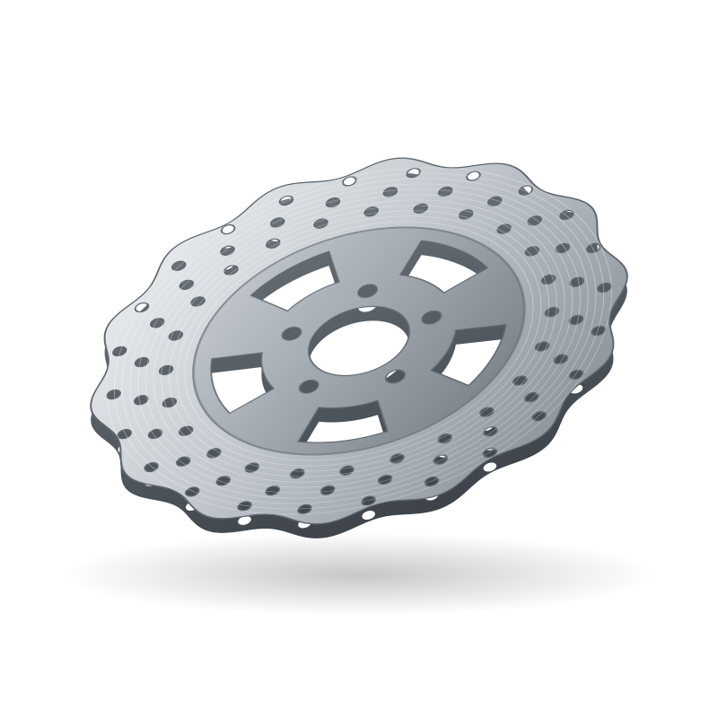
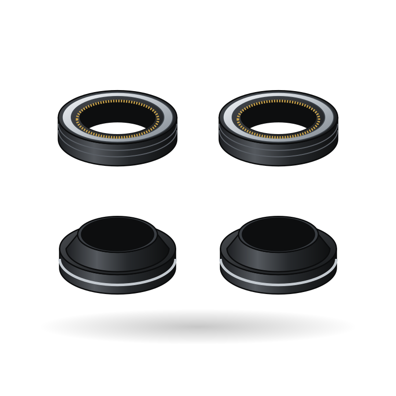

Spare parts / Spiro / Ekon
Electric boda-boda · KE/Africa
Spiro Ekon spare parts
12 parts for the Spiro Ekon: what wears, when to replace it, where to buy it and how to fit it.
EVEV driveDisc + Drum brakesElectric
Check the specification. Details for this model vary by market; confirm yours before you buy.
Brakes
 Illustration
Illustration Illustration
Illustration
IllustrationWheels
 Illustration
Illustration Illustration
IllustrationControls

Body

Electrical
Suspension

Illustration Illustration
IllustrationEV electrical


Service schedule for the Spiro Ekon
| Part | Replace | Guide |
|---|---|---|
| Brake pads | 10,000-20,000 km (min 2 mm) | Check brake pad wear |
| Drum brake shoes | 10,000-18,000 km | Service a drum brake |
| Tyres and inner tubes | 10,000-25,000 km or 5 years age | Inspect tyres for wear and damage |
| Brake and clutch levers | Crash replacement | Adjust a drum brake |
| Mirrors | Crash replacement | Tighten and adjust mirrors |
| Headlight bulb / LED unit | Failure | Replace a bulb |
| Front fork oil seals | 20,000-40,000 km or when leaking | Replace fork oil and seals |
| Motor controller | Failure | Diagnose a controller fault |
| Brake disc / rotor | Every 2-3 sets of pads or below min thickness | Check a brake disc |
| Rear shock absorber | 30,000-50,000 km or when leaking | Check the rear shock absorbers |
| Wheel bearings | 20,000-40,000 km or play detected | Check wheel bearings |
| Charger | Failure | Check the charger and cable |
Indicative intervals. The owner's manual for your model wins.